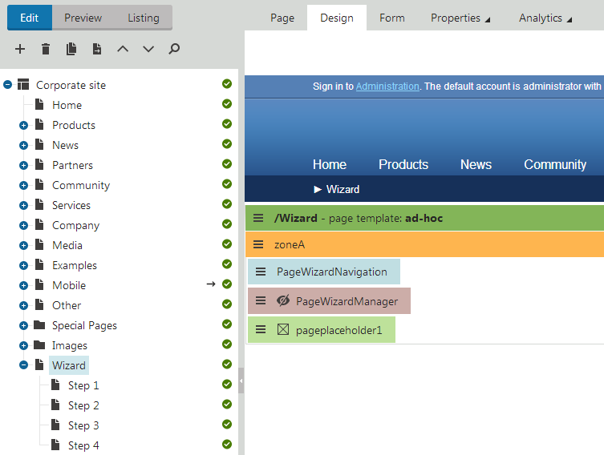
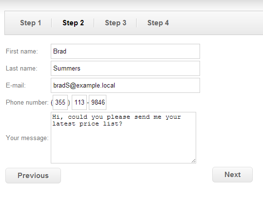

Creating wizards on websites
Kentico allows you to create wizards — pages that guide users through a sequence of steps. A common example of a wizard is the checkout process of an on-line store. You can build wizards using the portal engine and a set of predefined web parts.
You cannot use ASPX templates when creating a wizard or Portal engine sections of ASPX templates, use only the Portal engine.
The wizard uses standard pages to define the steps. You have full control over the step content, and can leverage the features of Kentico pages for every step:
Multilingual step content
Tracking of web analytics for individual steps
On-line marketing features (such as optimization testing or content personalization)
Defining page wizards
To set up a page wizard on your website:
Open the Pages application and select your site.
Switch to the Design tab.
Add the Page wizard manager web part.
Add the Page placeholder web part.
The page serves as the "parent" of the page wizard and provides a master page for the content of steps. The Page wizard manager ensures the overall logic of the wizard. The Page placeholder represents the area where the wizard displays the content of individual steps.
Tip: If the parent page of your wizard does not have any content of its own, you can redirect visitors to the first wizard step:
In the Pages application, open the page's Properties -> Navigation tab.
Select Redirect to first child in the Menu actions section.
Click Save.
Adding steps
To create the wizard steps, add child pages (or other types of pages) under the page containing the Page wizard manager web part. Build the content of steps just like any other portal engine pages.
You also need to configure page nesting for all child pages that you wish to use as steps:
In the Pages application, select the page.
Open the Properties -> Template tab.
Enable nesting within the parent page (and any other required levels of the website).
Click Save.
You can choose which child pages to use as steps by configuring the page filtering properties of the Page wizard manager web part. The wizard only loads steps from the first level of direct child pages.
By default, the step order matches the order of the child pages in the content tree. You can use the OrderBy property of the Page wizard manager web part to load the steps in a different order determined by an SQL clause.

Note
If you add, remove or reorder the steps of an existing wizard, you need to restart the application to ensure that the wizard behaves correctly. Open the System application and click Restart application.
Building step navigation
Navigation allows users to move between the steps of the page wizard. Add navigation elements using the following web parts:
|
Web part |
Description |
|
Page wizard button |
Displays a button or link that sends users to the previous/next step in the wizard. Choose whether the button leads to the next or previous step when configuring the web part's properties. If you set the Final step URL property of the Page wizard manager web part, the next button also works on the last step in the wizard. When a user clicks the final next button, the wizard redirects to the specified URL. Note: The step transitions only work on the live site and in preview mode. |
|
Page wizard navigation |
Displays an overview of all steps in the wizard. The wizard navigation highlights the current step and allows users to move between steps. You can fully customize the format of the navigation by assigning transformations through the web part's properties. |
You can position the wizard navigation in two different ways:
Shared navigation for the entire wizard - place the web parts onto the wizard's parent page, around the page placeholder representing the step content
Separate navigation for individual steps - add the web parts directly into the content of step pages

Wizard with navigation above the step content and Previous/Next buttons below
Restricting the step order
If you enable the Restrict step order property of the Page wizard manager web part, the wizard forces users to progress through the steps in the defined order. The system tracks which steps individual users have passed through, and stores the information in the HTTP session.
Restricting the step order causes the following behavior:
Users can only move forward through the wizard's steps using the Next button
The Page wizard navigation web part renders unvisited steps as inactive items without links
If a user attempts to access an unvisited step through the URL of the step page, the wizard opens the last visited step instead
If the Final step URL property is filled for the Page wizard manager web part, the wizard automatically clears the history of visited steps for users who click the Next button on the last step.
Setting up automatic step transitions
You can create wizards that automatically move users between steps under certain conditions:
In the Pages application, select the page representing the step where you want the transition to occur.
Open the Design tab and add the Page wizard step action web part (anywhere on the page).
Choose the type of step transition in the Action type property:
Skip - continues to the next step according to the direction the user is moving in the wizard
Next - always moves one step forward
Previous - always moves one step back
Enter the macro condition that triggers the step transition into the Action condition property. The condition must return a true or false value.
Click OK.
When a user arrives on the step containing the web part, the system evaluates the action condition. If true, the web part immediately performs the selected step transition.
For example, if you have a step that requires users to log in or register, you can make the wizard skip the step for already authenticated users:
CurrentUser.IsAuthenticatedNote: Automatic step transitions only work on the live site and in preview mode.
Validating step data
Validation rules are a set of conditions that must be fulfilled to successfully complete wizard steps. Validation typically occurs on steps that require users to input data.
The wizard performs step validation:
when users move to the next step by clicking the Page wizard button
during automatic skip transitions done by the Page wizard step action web part (if the Validate step property is enabled)
The step validation requirements depend on the implementation of the web parts placed on the step. If the validation fails, the wizard cancels the step transition and the related web parts display a validation error message.
Tip: If you need to implement custom validation rules for web parts, refer to Connecting web parts with the page wizard.
Page wizard macros
You can use macro expressions within the context of the page wizard to load the data of steps.
Note: The following expressions are macros, so you need to enclose them in {% ... %} parentheses.
Getting steps:
DocumentWizard.FirstStep
DocumentWizard.CurrentStep
DocumentWizard.PreviousStep
DocumentWizard.NextStep
DocumentWizard.LastStep
DocumentWizard.Steps - accesses the collection of all steps in the wizard
DocumentWizard.Steps.Count - returns the total number of steps in the wizard
DocumentWizard.Steps[5] - gets the 6th step
Getting step data:
Step.StepIndex - gets the step's index in the page wizard step collection. The index of the first step is 0.
Step.StepUrl - returns the relative URL of the step's page, including the virtual directory and extension. For example: /Checkout/Shipping.aspx
Step.StepData["NodeName"] - gets the name of the step's page. You can use the StepData property to get the values of any other page columns.
For example, you can add the following macro into the Text property of the Page wizard button web part that displays the next step button:
{%DocumentWizard.CurrentStep == DocumentWizard.LastStep ? "Finish" : DocumentWizard.NextStep.StepData["NodeName"]%}The macro uses a ternary operator to dynamically set the caption of the Next button:
The button text is Finish on the last step in the wizard (if the page wizard has a final step URL specified)
The button displays the name of the next step page on all other steps